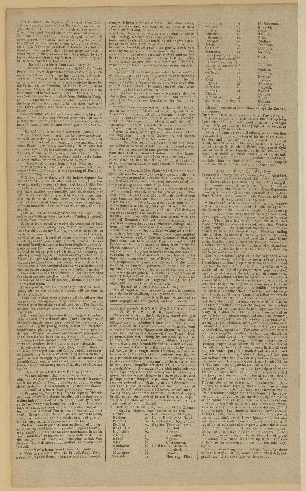

HN HN-010 · September 11, 1781 · Crime, Law & Justice > Trials, Convictions & Acquittals > Appeals
Source: Pennsylvania Packet, p. 2 — original page.
Report: A Lisbon letter announced a judgment reassessing people condemned, banished, or imprisoned under a January 1759 decision tied to the alleged attempted assassination of King Joseph I. The paper characterized the defendants very broadly as innocent.
Corroborated context: Brazil's National Archives historical Portugal collection documents the May 23, 1781 rehabilitation of the Távora and Atouguia families and the controversy over the 1759 convictions. Portugal's national archive documents the 1759 executions. The newspaper's all-encompassing wording should not be treated as a precise description of which defendants were exonerated.
Assessment: Well-established broader historical affair, with a specific contemporaneous American newspaper report of the reversal. Further legal-judgment comparison would be valuable.
Authentic images retrieved from Library of Congress / Chronicling America. Article crops are located using the archive's own OCR word coordinates and rendered at native crop resolution; article clips are assembled from the archive's own article-block images; page scans are reduced-size access renditions. No images were generated, mocked, or retouched.

Not yet acquired. Queued for provider-specific acquisition testing (see source-acquisition manifest).
URL (preserved verbatim): https://www.loc.gov/resource/sn83021127/1781-09-11/ed-1/?sp=2
Saved research report: Historical_Newspaper_Event_Research_001-025_screening_2026-10-23.md
Evidence note: A newspaper report means a historical publication made a claim; it does not establish that claim as fact. Contemporary reporting is separated from later scholarly context and our own assessment.